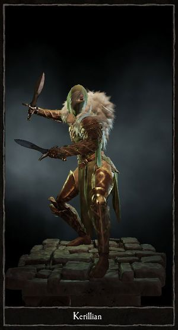
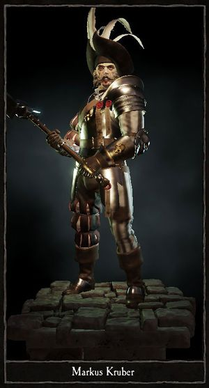
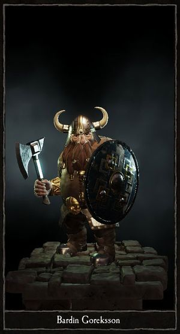
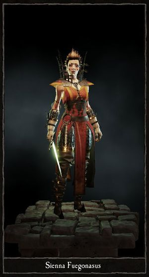

There are five different heros in Vermintide. The Witch Hunter, The Waywatcher, The Empire Soldier, The Dwarf Ranger, and The Bright Wizard.
There are five different heros in Vermintide. The Witch Hunter, The Waywatcher, The Empire Soldier, The Dwarf Ranger, and The Bright Wizard.
Judge, jury and executioner combined, Victor Saltzpyre is a Witch Hunter who will use any means necessary to burn out heresy from the heart of the Empire. Grim and relentless, this sinister man is a member of the Order of the Silver Hammer, an organization whose members seek to punish those who dare employ fell sorcery or consort with the agents of the Dark Gods. When battle rages and the conjurations of vile wizards burn the skies above, Witch Hunters are often all that stands between an Empire soldier and a most unnatural death. Victors obsession with the Skaven has unfortunately led to friction with his superiors, preventing him from being promoted to Witch Hunter Captain. Additionally, his lack of objections towards working with other races separates him even further from his fellow members, even if he draws the line at not allying with anything outright evil or daemonic. In Victors eyes, the end justifies the means, and he is ultimately willing to fight alongside anyone as long as they are not apparent enemies of Sigmar and the Empire.
The Witch Hunter can use a rapier, an axe, or a great sword as his melee weapon, and pistols, a crossbow, or a repeater pistol as his ranged weapon.
Enigmatic and sharp-sighted, Kerillian is a Waywatcher who walks the lands of men, after having left her post as a guardian of the Wood Elves ancient home Athel Loren. The reasons why, she keeps to herself. Using her exceptional skills with a bow and blade to take down anyone perceived as a threat, she is as likely to kill you as she is to begrudgingly acknowledge your presence. Kerillian regards the human race as nothing more than clueless children, and treats them accordingly, most often drenching her answers to their naive questions in patronising sarcasm. Unfortunately for her, Wood Elves are rare in human lands, and even if many recoil in fear, she is regarded as a curiosity and approached more frequently than she would prefer by foolish humans attempting to interact.
The Waywatcher can use dual elven daggers, and elven short sword, dual elven swords, or an elven dagger/sword combo as melee weapons. The Waywatcher specializes in ranged combat with her the bow. There are multiple types of arrows that can go along with the bow. The Bodkin arrow is good against armored opponents. The Swiftshver arrow are light, so the Waywatcher can carry, and loose a full barrage of arrows. The Hagebane arrow is dipped in poison, and will deal damage over time to any enemy who got hit. Finally the Trueflight arrow will always hit it's target.
Having fled farm life outside Ubersreik, a young Markus Kruber found himself in the Grunburg local militia and quickly rose through the ranks. A schism with an inept superior eventually spiraled out of control, and resulted in a relegation to Ostland. Being sent from the richest province of the Empire to one of the poorest and most war-ravaged was clearly a punishment, but Kruber welcomed the change. He hoped that competent leadership and a steady stream of purposeful action would await him at his new post.Leading the 8th Ostland Swordsmen, Markus drilled his troops until perfection, not content until their swords and shields felt like natural extensions of their own bodies. His leadership style was somewhat unconventional, inspiring confidence and loyalty not only through his prowess, but also due to his innate charisma and wit, making him immensely popular with his men. His unit was distinguished in several battles, whether it was breaking through Greenskin lines, repulsing marauding Beastmen, or hacking down ravaging berserker Northlanders. Markus Krubers humour and disposition earned him the respect of his men.
The Empire Soldier can use a great swords, two handed hammer, or mace. He can also use a short sword or a mace with a shield. For ranged combat he can use a blunderbuss, a handgun, or a repeater pistol.
He may be the shortest in the group of heroes, but the Dwarf Ranger Bardin Goreksson certainly makes up for it in ferocity, determination and spirit. Gregarious, prideful and not afraid to offend, Bardin is frequently seen charging into the thick of battle, axe or hammer in full swing and leaving a trail of Skaven corpses behind him. Once the victory is assured, he will be the first back to the pub, roaring and laughing at the top of his lungs in a manner only a dwarf is capable of. Bardin learned of a possible Skaven plot and made several attempts to find funding and clan-backing for an exploration party but found he was refused, laughed, and scorned at from every Hold in the Grey Mountains, a humiliating fact which only steadied his resolve in the matter. He now journeys to Ubersreik, as word has reached him from the large Dwarf community there. It is said a shop of antiquities on the edge of the Marktplaz holds a large Dwarfish tome. The book's page are covered in faded runes that might hold the answer to what the Skaven are doing. The Ranger is on his way to purchase this tome, after having negotiated a fair price. Of course, what Bardin considers a fair price maybe totaly different to the shopkeeper, but the Dwarf's skills of negotiating shouting very loudly until he gets his way are formidable.
The Dwarven Ranger can use a two handed great sword or hammer, or a short axe or hammer with a shield. He can also use a crossbow, a handgun, or the Grudge-Raker volley gun.
Sienna Fuegonasus is a fiery tempered Bright Wizard who roams the land in a constant search for opportunities to indulge herself in the ecstasy of pyromancy. Blessed with a sharp intellect and a wicked sense of humour, Sienna will generally pass for a well-adjusted individual, as far as wizards go. Those who witness her in battle, however, will soon catch a glimpse of how deep her dependency on the adrenaline rush of pyromancy has taken her. Sienna mastered the Lore of Fire in Altdorf, but it soon became abundantly clear that she lacked both passion and patience for scholarly pursuits. She could not stand the slow pace of College life, and instead, she felt a void inside her that could only be filled by the addictive rush of intense spell casting. Fire magic became Sienna’s drug of choice, and she realised that she was unquestionably an addict. Accepting this fact, she decided to blaze her path through life, and has never looked back since. Sienna arrives in Ubersreik as the prisoner of a Witch Hunter, Victor Saltzpyre, and guarded by a former State Trooper, Markus Kruber. A trial indeed awaits, but of a different kind than they all expected.
The Bright Wizard can use a mace, a short sword, or a burning short sword as her melee weapon, but her main focus is her magic. The Bright Wizard can use a variety of staves to focus the winds of magic in different ways. There is a basic fireball, a faster burning bolt, a slower flame spear, a searing wind of fire, a beam like fire blast, and a area of effect pillar of fire.